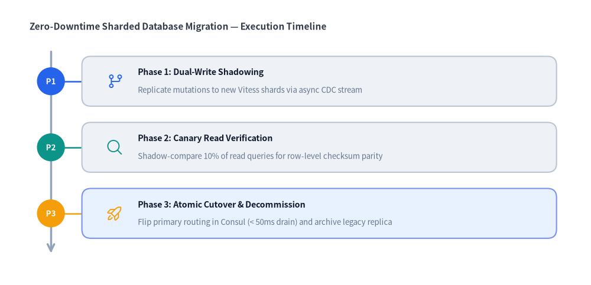

Roadmap
The Roadmap component renders chronological timelines, agenda sequences, and phased engineering roadmaps along a vertical or horizontal spine.
Each milestone pairs a spine badge (badge_text) and connector line with a rounded-rectangle or pill-shaped card (card_shape="rounded_rect" | "pill") containing a milestone title (text), supporting description, and optional vector icon.

Source Code
from drawlib.canvas import save, setup
from drawlib.icons import phosphor
from drawlib.lines import line
from drawlib.shapes import circle
from drawlib.smartarts import Roadmap
from drawlib.styles import Styles
from drawlib.text import text
setup(width=132, height=60)
# Subtle center divider
line((64.5, 4.0), (64.5, 56.0), style=Styles.MutedDashed)
# 1. Left Panel: Vertical Straight Spine (curve_bend=0.0, card_shape="rounded_rect")
phosphor.git_commit(xy=(5.5, 53.0), width=3.4, style=Styles.PrimaryFlat)
text((10.0, 54.5), "1. Straight Spine (curve_bend=0.0)", style=Styles.BlackBold.patch(text_size=10.5, halign="left"))
rm_straight = Roadmap(
style=Styles.Neutral,
text_style=Styles.DarkBold.patch(text_size=11.0),
description_style=Styles.Muted.patch(text_size=9.5),
spine_style=Styles.DarkBold,
badge_style=Styles.SecondaryNeutral,
badge_text_style=Styles.DarkBold.patch(text_size=10.0),
icon_style=Styles.PrimaryBold,
direction="vertical",
curve_bend=0.0,
card_shape="rounded_rect",
)
rm_straight.add(
"T+00m: Alert Triggered",
"SYN flood hits 180 Gbps",
badge_text="1",
icon=phosphor.warning,
badge_style=Styles.AccentFlat,
badge_text_style=Styles.WhiteBold.patch(text_size=10.0),
icon_style=Styles.AccentBold,
)
rm_straight.add("T+02m: BGP Scrubbing", "Anycast diversion active", badge_text="2", icon=phosphor.shield_check)
rm_straight.add(
"T+07m: SLA Restored",
"Origin P99 at 11.4ms",
badge_text="3",
icon=phosphor.check_circle,
badge_style=Styles.PrimaryFlat,
badge_text_style=Styles.WhiteBold.patch(text_size=10.0),
)
rm_straight.draw(xy=(5.0, 8.0), width=55.5, height=42.0)
circle((5.0, 8.0), radius=1.1, style=Styles.DangerFlat)
text((5.0, 3.8), "xy=(5, 8) [Bottom-Left]", style=Styles.DangerBold.patch(text_size=10.0, halign="left"))
# 2. Right Panel: Vertical Curved Spine (curve_bend=0.22, card_shape="pill")
phosphor.bezier_curve(xy=(68.5, 53.0), width=3.4, style=Styles.PrimaryFlat)
text((73.0, 54.5), "2. Curved Pill Agenda (curve_bend=0.22)", style=Styles.BlackBold.patch(text_size=10.5, halign="left"))
rm_curved = Roadmap(
style=Styles.Neutral,
text_style=Styles.DarkBold.patch(text_size=11.0),
description_style=Styles.Muted.patch(text_size=9.5),
spine_style=Styles.DarkBold,
badge_style=Styles.SecondaryNeutral,
badge_text_style=Styles.DarkBold.patch(text_size=10.0),
icon_style=Styles.PrimaryBold,
direction="vertical",
curve_bend=0.22,
card_shape="pill",
)
rm_curved.add(
"01. Core Engine",
"Vector canvas & themes",
badge_text="01",
icon=phosphor.cube,
badge_style=Styles.PrimaryFlat,
badge_text_style=Styles.WhiteBold.patch(text_size=10.0),
)
rm_curved.add("02. AI Agent CLI", "Headless build & grid review", badge_text="02", icon=phosphor.robot)
rm_curved.add("03. Cloud & GeoMap", "GCP icons & 215 maps", badge_text="03", icon=phosphor.globe_hemisphere_east)
rm_curved.draw(xy=(68.5, 8.0), width=58.5, height=42.0)
circle((68.5, 8.0), radius=1.1, style=Styles.DangerFlat)
text((68.5, 3.8), "xy=(68.5, 8) [Bottom-Left]", style=Styles.DangerBold.patch(text_size=10.0, halign="left"))
save()
1. Vertical Timeline & Curved Agenda (direction="vertical")
In direction="vertical" (the default), milestones flow top-to-bottom. Setting curve_bend=0.0 renders a straight vertical spine with a downward arrowhead and circular milestone badges, while setting a non-zero curve_bend (between -0.5 and 0.5) bends the spine along a quadratic Bezier arc and shifts each milestone card horizontally to follow the curve.
from drawlib.canvas import save, setup
from drawlib.icons import phosphor
from drawlib.smartarts import Roadmap
from drawlib.styles import Styles
from drawlib.text import text
setup(width=120, height=58)
text((6.0, 52.5), "Zero-Downtime Sharded Database Migration — Execution Timeline", style=Styles.DarkBold.patch(text_size=11.0, halign="left"))
migration = Roadmap(
style=Styles.Neutral,
text_style=Styles.DarkBold.patch(text_size=11.5),
description_style=Styles.Muted.patch(text_size=10.0),
spine_style=Styles.DarkBold,
badge_style=Styles.SecondaryNeutral,
badge_text_style=Styles.DarkBold.patch(text_size=10.5),
icon_style=Styles.PrimaryBold,
direction="vertical",
curve_bend=0.0,
card_shape="rounded_rect",
)
migration.add(
"Phase 1: Dual-Write Shadowing",
"Replicate mutations to new Vitess shards via async CDC stream",
badge_text="P1",
icon=phosphor.git_branch,
)
migration.add(
"Phase 2: Canary Read Verification",
"Shadow-compare 10% of read queries for row-level checksum parity",
badge_text="P2",
icon=phosphor.magnifying_glass,
)
migration.add(
"Phase 3: Atomic Cutover & Decommission",
"Flip primary routing in Consul (< 50ms drain) and archive legacy replica",
badge_text="P3",
icon=phosphor.rocket_launch,
style=Styles.PrimaryNeutral,
badge_style=Styles.PrimaryFlat,
badge_text_style=Styles.WhiteBold.patch(text_size=10.5),
)
migration.draw(xy=(6.0, 5.0), width=108.0, height=44.0)
save()

2. Horizontal Alternating Milestone Roadmap (direction="horizontal")
When direction="horizontal", the spine runs left-to-right with a rightward arrowhead. Setting alternating=True places even-indexed milestone cards (0, 2, 4...) above the horizontal spine and odd-indexed cards (1, 3, 5...) below the spine, allowing longer milestone titles (text) and descriptions (description) without horizontal crowding.
from drawlib.canvas import save, setup
from drawlib.icons import phosphor
from drawlib.smartarts import Roadmap
from drawlib.styles import Styles
from drawlib.text import text
setup(width=128, height=56)
text((6.0, 50.5), "2026 Platform Engineering & Reliability Roadmap (Horizontal Alternating)", style=Styles.DarkBold.patch(text_size=11.0, halign="left"))
quarters = Roadmap(
style=Styles.Neutral,
text_style=Styles.DarkBold.patch(text_size=11.0),
description_style=Styles.Muted.patch(text_size=9.5),
spine_style=Styles.DarkBold,
badge_style=Styles.SecondaryNeutral,
badge_text_style=Styles.DarkBold.patch(text_size=10.0),
icon_style=Styles.PrimaryBold,
direction="horizontal",
alternating=True,
card_shape="rounded_rect",
)
quarters.add(
"Q1: Foundation",
"Unified telemetry &\nOpenTelemetry SDK",
badge_text="Q1",
icon=phosphor.cube,
)
quarters.add(
"Q2: Service Mesh",
"Multi-cluster mTLS\n& envoy rate limits",
badge_text="Q2",
icon=phosphor.shield_check,
)
quarters.add(
"Q3: Edge Compute",
"Anycast Workers &\nregional KV cache",
badge_text="Q3",
icon=phosphor.lightning,
style=Styles.PrimaryNeutral,
badge_style=Styles.PrimaryFlat,
badge_text_style=Styles.WhiteBold.patch(text_size=10.0),
)
quarters.add(
"Q4: Autonomous DR",
"Chaos game days &\nauto-failover drills",
badge_text="Q4",
icon=phosphor.rocket_launch,
)
quarters.draw(xy=(6.0, 4.0), width=116.0, height=43.0)
save()

3. Spine Modes & Coordinate Geometry
- Bottom-Left Anchor (
xy):Roadmap.draw(xy=(x, y), width=W, height=H)anchors the bottom-left corner of the overall bounding box at(x, y)and extendsWunits rightward (+x) andHunits upward (+y). - Vertical Spine Modes (
direction="vertical"):curve_bend = 0.0(default): Straight vertical spine on the left with a downward arrowhead (->) at the bottom, circular badges on the spine, and horizontal connector ticks into each card.curve_bend != 0.0(range-0.5to0.5): Quadratic Bezier arc spine (line_bezier1). Each milestone badge and card shifts horizontally along the exact parametric Bezier point $B(t)$ for $t \in [0, 1]$.
- Horizontal Spine Modes (
direction="horizontal"):alternating = False(default): Places the horizontal spine near the bottom of the bounding box and aligns all milestone cards in a single row above the spine.alternating = True: Places the horizontal spine along the vertical midline (y0 + H/2) and alternates cards above and below the spine.
- Card Shapes (
card_shape):"rounded_rect"(default): Standard rounded rectangle card (shape_r=2.0) with a left accent stripe matching the milestonebadge_style."pill": Stadium/capsule card (shape_r = card_height / 2) ideal for curved agenda layouts.
4. API Reference
Constructor
Roadmap(
*,
style: Style,
text_style: Style,
spine_style: Style,
badge_style: Style,
badge_text_style: Style,
description_style: Style | None = None,
icon_style: Style | None = None,
direction: Literal["vertical", "horizontal"] = "vertical",
curve_bend: float = 0.0,
card_shape: Literal["pill", "rounded_rect"] = "rounded_rect",
alternating: bool = False,
spacing: float = 2.5,
)
Methods & Properties
add(text: str, description: str = "", *, badge_text: str | None = None, icon: Callable | None = None, style: Style | None = None, text_style: Style | None = None, description_style: Style | None = None, badge_style: Style | None = None, badge_text_style: Style | None = None, icon_style: Style | None = None, show: bool = True) -> RoadmapItem: Appends a milestone item (textis the primary milestone title,descriptionis the supporting subtitle/description) and returns a mutableRoadmapItem. Settingitem.show = Falsehides that milestone's badge, connector, and card while keeping the spine and all remaining milestones at their exact positions.roadmap.items -> list[RoadmapItem]: Returns the list of registeredRoadmapIteminstances for deferred mutation.draw(xy: tuple[float, float], width: float = 100.0, height: float = 60.0, *, scale: float = 1.0) -> Self: Renders the spine, milestone badges, connectors, and cards within the(width, height)bounding box anchored at bottom-leftxy.